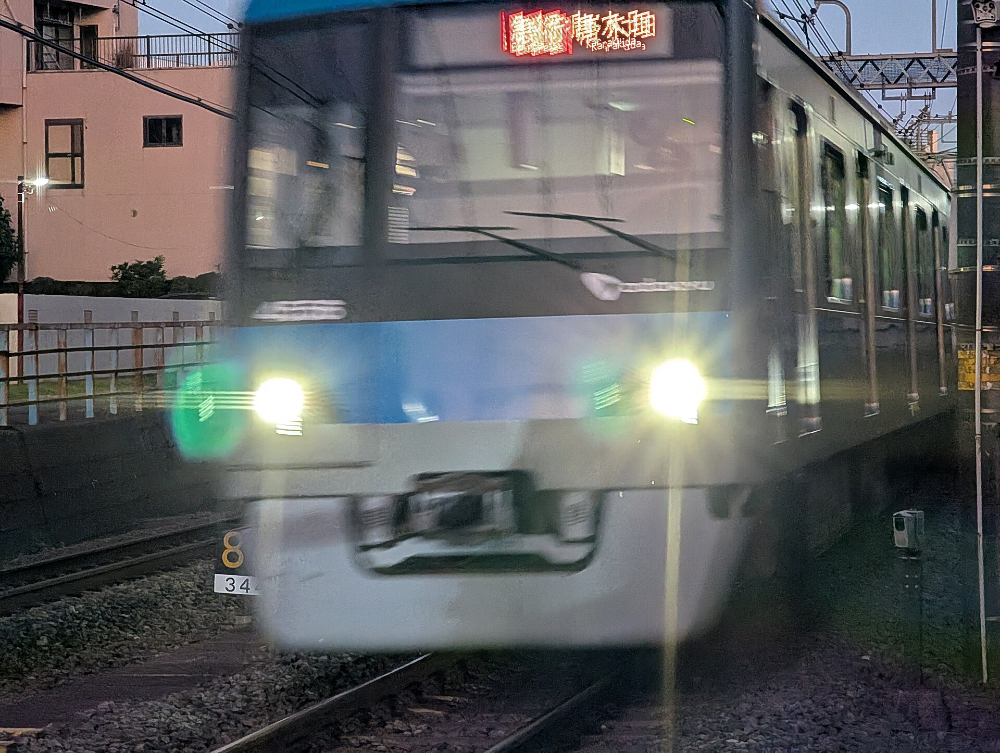
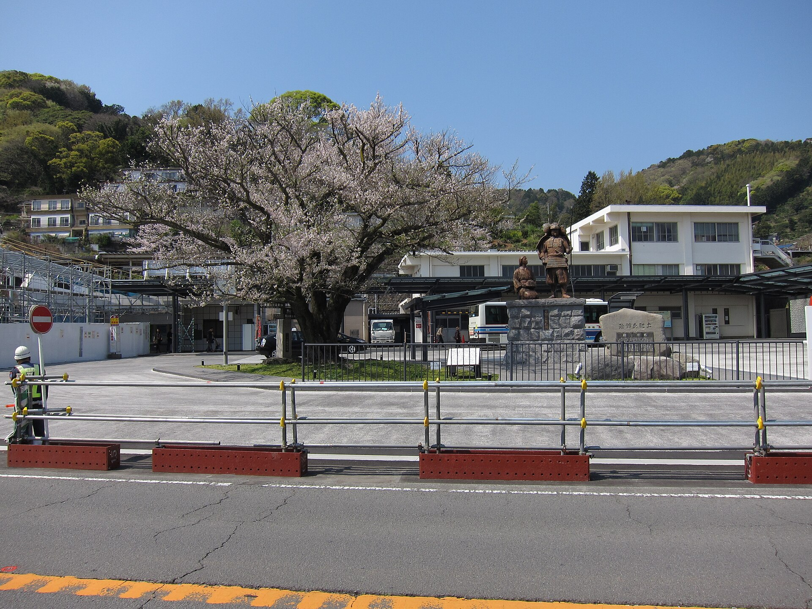

泊まって、出かける+
箱根・小田原へ小田急で一本
新宿・町田へ小田急で一本
湯につかって泊まり、朝風呂に入ってから出かけられます。湯の出どころである湯河原も、同じ小田急と乗り継ぎで行ける先です。






開業のお知らせ
開業日と、ご予約の受付が始まる日を、先にお送りします。お送りするのは開業までのあいだだけです。
制作中のたたき台です（2026-11-17）。料金・写真・文言は、まだ確定していません。
小田急が二手に分かれる駅から。新宿へも、町田へも、箱根の方へも、乗り換えなしで行けます。
写真：小田急 相模大野駅 北口
湯につかって泊まり、朝風呂に入ってから出かけられます。湯の出どころである湯河原も、同じ小田急と乗り継ぎで行ける先です。


開業日と、ご予約の受付が始まる日を、先にお送りします。お送りするのは開業までのあいだだけです。